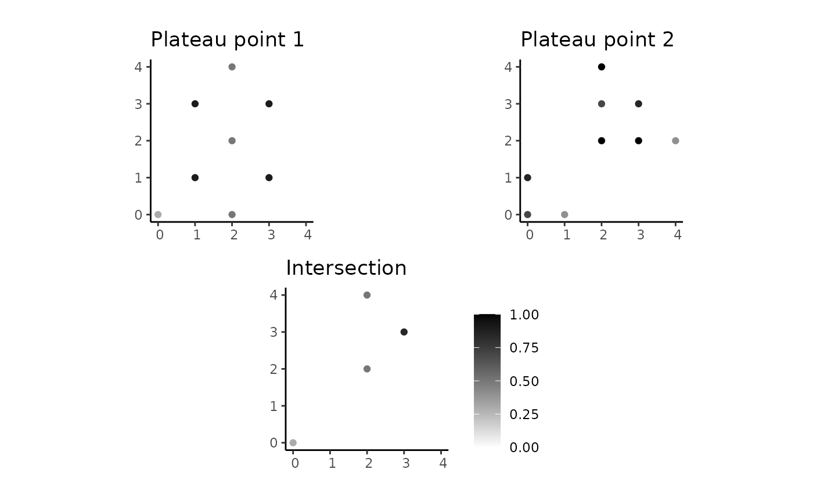

Compute fuzzy geometric set operations
Source:R/fuzzy_geom_set_operations.R
fsr_geometric_operations.RdThe spatial plateau set operations plateau intersection, plateau union, and plateau difference implement the respective operations fuzzy geometric intersection, fuzzy geometric union, and fuzzy geometric difference.
Usage
spa_intersection(pgo1, pgo2, itype = "min", as_pcomposition = FALSE)
spa_union(pgo1, pgo2, utype = "max", as_pcomposition = FALSE)
spa_difference(pgo1, pgo2, dtype = "f_diff", as_pcomposition = FALSE)
spa_common_points(pline1, pline2, itype = "min")Arguments
- pgo1
A
pgeometryobject of any type.- pgo2
A
pgeometryobject of any type.- itype
A character value that indicates the name of a function implementing a t-norm. The default value is
"min", which is the standard operator of the intersection.- as_pcomposition
A logical value; if
TRUE, it returns a spatial plateau composition object.- utype
A character value that refers to a t-conorm. The default value is
"max", which is the standard operator of the union.- dtype
A character value that indicates the name of a difference operator. The default value is
"f_diff", which implements the standard fuzzy difference.- pline1
A
pgeometryobject of the typePLATEAULINE.- pline2
A
pgeometryobject of the typePLATEAULINE.
Details
They receive two pgeometry objects of the any type as input and yield another pgeometry object as output.
The family of fuzzy geometric set operations consists of the following functions:
spa_intersection()computes the geometric intersection of two spatial plateau objects. The membership degree of common points are calculated by using a t-norm operator given by the parameteritype. Currently, it can assume"min"(default) or"prod".spa_union()computes the geometric union of two spatial plateau objects. The membership degree of common points are calculated by using a t-conorm operator given by the parameterutype. Currently, it can assume"max"(default).spa_difference()computes the geometric difference of two spatial plateau objects. The membership degree of common points are calculated by using a difference operator given by the parameterdtype. Currently, it can assume"f_diff"(default fuzzy difference),"f_bound_diff"(fuzzy bounded difference),"f_symm_diff"(fuzzy symmetric difference), or"f_abs_diff"(fuzzy absolute difference).
Other t-norms, t-conorms, and difference operators can be implemented and given as values for the parameters itype, utype, and dtype, respectively.
For this, the following steps should be performed:
Implement your function that accepts two numeric values in [0, 1] as inputs and yields another numeric value in [0, 1] as output. Recall that t-norms and t-conorms must have some specific properties according to the fuzzy set theory.
Use the name of your function as the character value of the corresponding parameter
itype,utype, ordtype.
An example of operator is the source code of f_bound_diff():
f_bound_diff <- function(x, y) { max(0, (x - y)) }
The spa_common_points() is deprecated. In the past, it computed the common points of two plateau line objects; now, you can use spa_intersection().
References
Underlying concepts and formal definitions of spatial plateau set operations are explained in detail in:
Examples
library(ggplot2)
# Point components
pcp1 <- create_component("POINT(0 0)", 0.3)
pcp2 <- create_component("MULTIPOINT((2 2), (2 4), (2 0))", 0.5)
pcp3 <- create_component("MULTIPOINT((1 1), (3 1), (1 3), (3 3))", 0.9)
pcp4 <- create_component("MULTIPOINT((2 2), (2 4), (3 2))", 1)
pcp5 <- create_component("MULTIPOINT((0 0), (2 3))", 0.7)
pcp6 <- create_component("MULTIPOINT((0 1), (3 3))", 0.85)
pcp7 <- create_component("MULTIPOINT((1 0), (4 2))", 0.4)
# Line components
lcp1 <- create_component("LINESTRING(0 0, 1 1.5)", 0.2)
lcp2 <- create_component("LINESTRING(1 3, 1 2, 2 0.5)", 0.5)
lcp3 <- create_component("LINESTRING(2 1.2, 3 1.6, 4 4)", 0.7)
lcp4 <- create_component("LINESTRING(1 1.5, 2 1.2)", 1.0)
lcp5 <- create_component("LINESTRING(-1 1, 2 2)", 0.9)
# Polygon components
rcp1 <- create_component("POLYGON((0 0, 1 4, 2 2, 0 0))", 0.4)
rcp2 <- create_component("POLYGON((2 0.5, 4 1, 4 0, 2 0.5))", 0.8)
# Creating plateau point objects
ppoint1 <- create_pgeometry(list(pcp1, pcp2, pcp3), "PLATEAUPOINT")
ppoint2 <- create_pgeometry(list(pcp4, pcp5, pcp6, pcp7), "PLATEAUPOINT")
# Creating plateau line objects
pline1 <- create_pgeometry(list(lcp1, lcp2, lcp3), "PLATEAULINE")
pline2 <- create_pgeometry(list(lcp4, lcp5), "PLATEAULINE")
# Creating a plateau region objects
pregion <- create_pgeometry(list(rcp1, rcp2), "PLATEAUREGION")
# Defining a wrapper to combine plots side by side, for convenience
combine_plots <- function(plot1, plot2, plot3) {
# setting the same range of coordinates and removing the legend of plot1 and plot2
plot1 <- plot1 + coord_sf(xlim = c(0, 4), ylim = c(0, 4)) + theme(legend.position = "none")
plot2 <- plot2 + coord_sf(xlim = c(0, 4), ylim = c(0, 4)) + theme(legend.position = "none")
plot3 <- plot3 + coord_sf(xlim = c(0, 4), ylim = c(0, 4))
ggplot() +
annotation_custom(ggplotGrob(plot1), xmin = 0, xmax = 0.5, ymin = 0.5, ymax = 1) +
annotation_custom(ggplotGrob(plot2), xmin = 0.5, xmax = 1, ymin = 0.5, ymax = 1) +
annotation_custom(ggplotGrob(plot3), xmin = 0, xmax = 1, ymin = 0, ymax = 0.5) +
coord_cartesian(xlim = c(0, 1), ylim = c(0, 1)) +
theme_void()
}
plot_ppoint1 <- plot(ppoint1) + ggtitle("Plateau point 1")
plot_ppoint2 <- plot(ppoint2) + ggtitle("Plateau point 2")
plot_pline1 <- plot(pline1) + ggtitle("Plateau line 1")
plot_pline2 <- plot(pline2) + ggtitle("Plateau line 2")
plot_pregion <- plot(pregion) + ggtitle("Plateau region")
# Computing the intersection
ppoints_intersec <- spa_intersection(ppoint1, ppoint2)
plot_inter <- plot(ppoints_intersec) + ggtitle("Intersection")
combine_plots(plot_ppoint1, plot_ppoint2, plot_inter)

if (FALSE) {
# varying the t-norm
ppoints_intersec <- spa_intersection(ppoint1, ppoint2, itype = "prod")
plot_inter <- plot(ppoints_intersec) + ggtitle("Intersection (prod)")
combine_plots(plot_ppoint1, plot_ppoint2, plot_inter)
plines_intersec <- spa_intersection(pline1, pline2)
plot_inter <- plot(plines_intersec) + ggtitle("Intersection")
combine_plots(plot_pline1, plot_pline2, plot_inter)
pregion_pline_intersec <- spa_intersection(pline1, pregion)
plot_inter <- plot(pregion_pline_intersec) + ggtitle("Intersection")
combine_plots(plot_pline1, plot_pregion, plot_inter)
# Computing the union
ppoints_union <- spa_union(ppoint1, ppoint2)
plot_union <- plot(ppoints_union) + ggtitle("Union")
combine_plots(plot_ppoint1, plot_ppoint2, plot_union)
plines_union <- spa_union(pline1, pline2)
plot_union <- plot(plines_union) + ggtitle("Union")
combine_plots(plot_pline1, plot_pline2, plot_union)
pregion_pline_union <- spa_union(pline1, pregion)
plot_union <- plot(pregion_pline_union) + ggtitle("Union")
combine_plots(plot_pline1, plot_pregion, plot_union)
# Computing the difference
ppoints_diff <- spa_difference(ppoint1, ppoint2)
plot_diff <- plot(ppoints_diff) + ggtitle("Difference")
combine_plots(plot_ppoint1, plot_ppoint2, plot_diff)
plines_diff <- spa_difference(pline1, pline2)
plot_diff <- plot(plines_diff) + ggtitle("Difference")
combine_plots(plot_pline1, plot_pline2, plot_diff)
pregion_pline_diff <- spa_difference(pline1, pregion)
plot_diff <- plot(pregion_pline_diff) + ggtitle("Difference")
combine_plots(plot_pline1, plot_pregion, plot_diff)
}